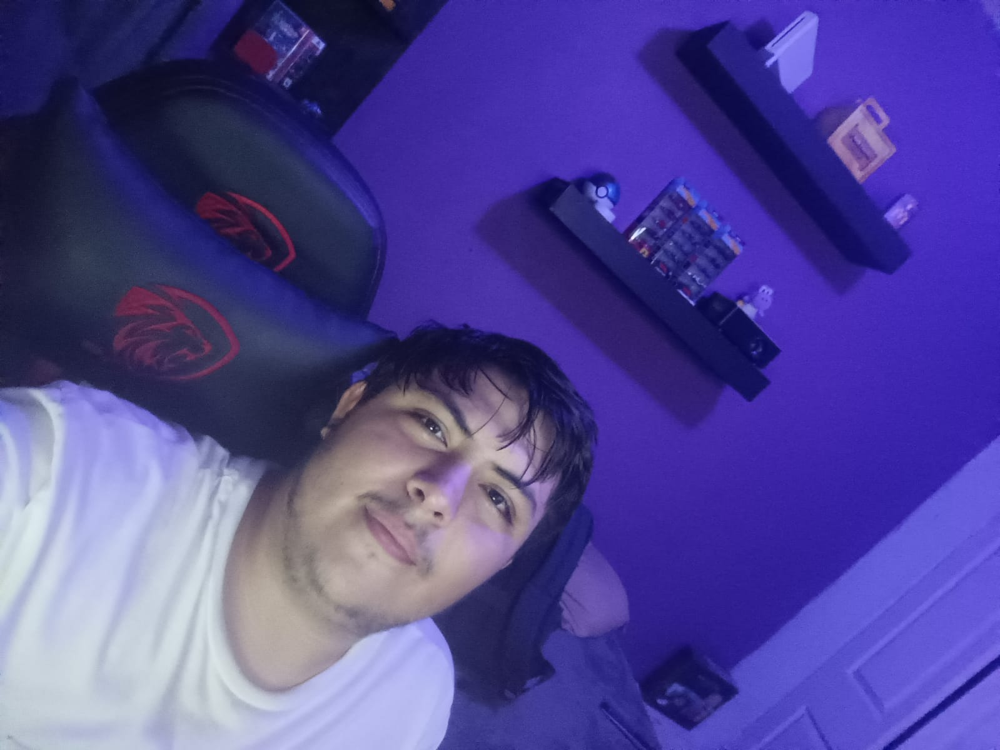

Nombre completo: Javier Subirias Aldama
Dirección de e-mail: javiersubirias4@gmail.com

Haz clic en la foto para verla más grande
Nací el 4 de mayo de 2007 en Ciudad Juárez, Chihuahua, México. Actualmente tengo 19 años y soy estudiante de la carrera de Desarrollo de Software y Tecnologías de la Información en la UTCJ, cursando el cuarto cuatrimestre. Voy medianamente bien en mis materias, aprendiendo cada día más sobre programación y tecnología.
Mis conocimientos técnicos y gustos personales se dividen de la siguiente manera:
Mis aspiraciones a lo largo del tiempo contemplan lo siguiente:
Reflexiones sobre estilo de vida, deseos y lugares del mundo:
| Pregunta | Respuesta |
|---|---|
| Si fueras económicamente independiente, ¿qué harías con tu dinero? | Primero que nada en lo esencial: casa, carro y comodidad; y más que nada en mis gustos personales como figuritas ya sean de series, animes, juegos y muñecos de Pokémon, peluches, consolas retro y videojuegos que antes no podía comprar. |
| ¿Cuál es el lugar del mundo que más te gustaría visitar y por qué? | Japón, por su cultura, sus paisajes, su tecnología avanzada, los Disneyland de allá, el museo de Nintendo y, por supuesto, sus impresionantes automóviles. |
| ¿Cuál sería el lugar del mundo que menos te gustaría visitar y por qué? | Como tal no hay ninguno. |
Puedes consultar mis prácticas y trabajos de la materia en los siguientes enlaces: